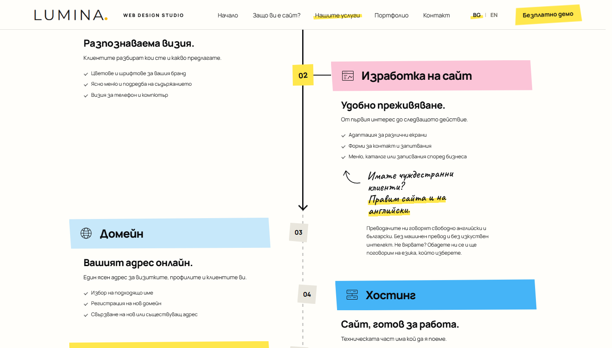
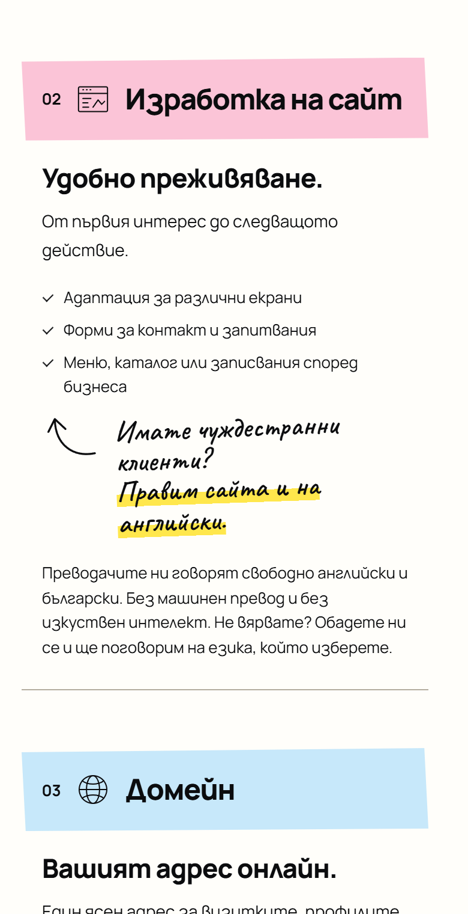
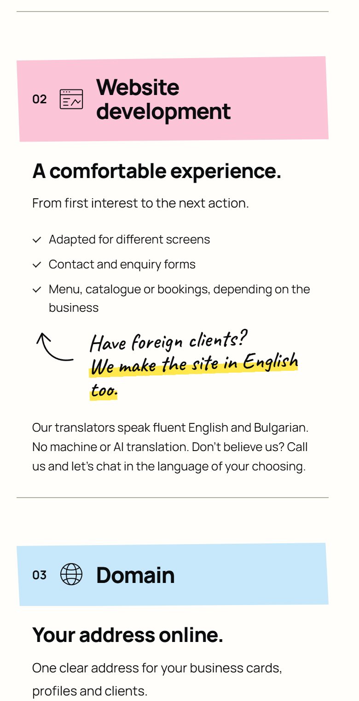
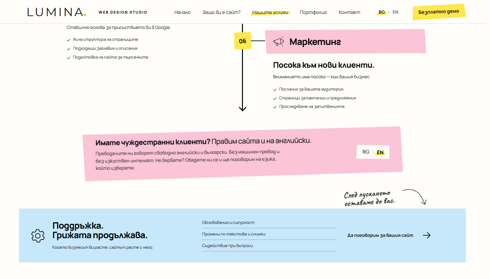
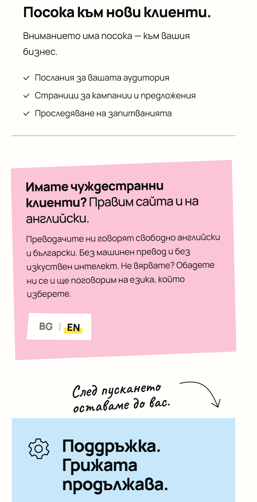
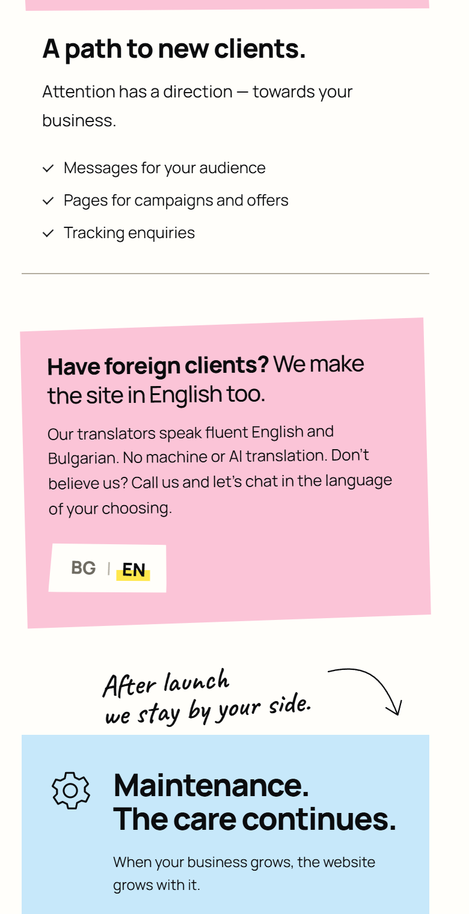
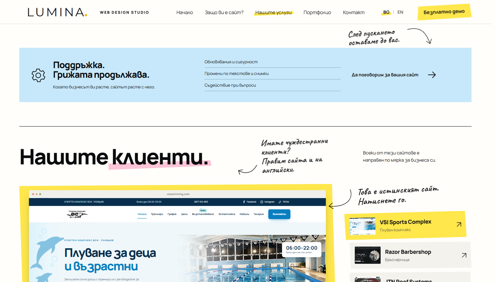
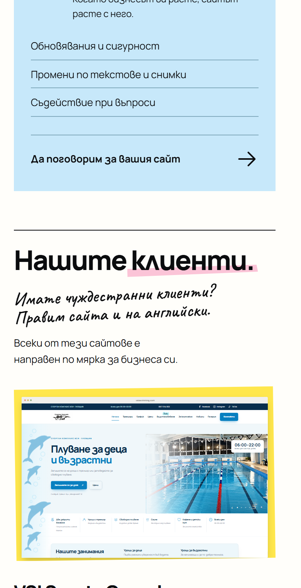
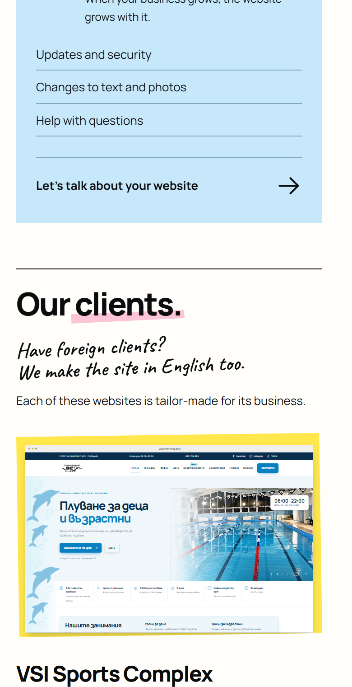

Къде да стои бележката за английския?
Три места за „Имате чуждестранни клиенти? Правим сайта и на английски.“ — показани върху истинската страница. При 1 и 2 е добавен и по-дългият текст за преводачите; при 3 няма място за него. Снимките са от днешната версия; линковете отварят страницата на живо с идеята вътре. Нищо от това още не е в сайта.
1Ръкописна бележка до „Изработка на сайт“Handwritten note beside "Website development"



2Хартиена лента в края на услугитеPaper strip at the end of the services



3Ръкописна бележка до „Нашите клиенти“Handwritten note next to "Our clients"


